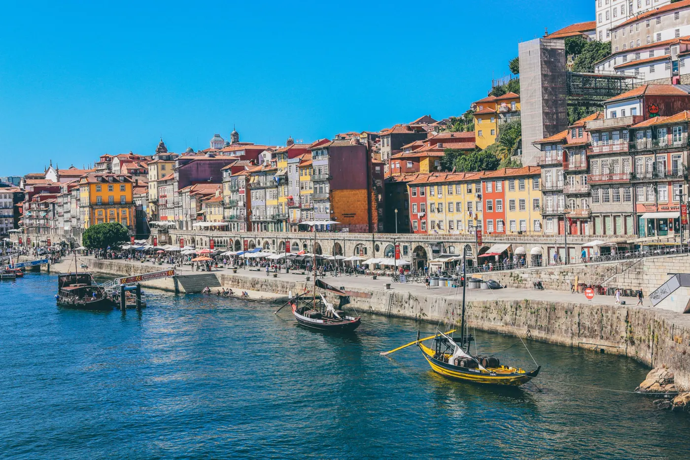
Porto, la Ribeira
Des quais colorés au bord du fleuve, et les rabelos, ces bateaux qui descendaient autrefois les barriques de la vallée.
Chapitre 1 · L'appel du large 37°05′N · 8°25′O
Un voyage du sud au nord, des falaises de l'Algarve aux terrasses du Douro.
Faites défiler pour partir
Chapitre 2 · Le voyage
On quitte les falaises dorées à l'aube.
Au-dessus de l'Atlantique
On traverse la brume qui monte de l'océan…
38°43′N · 9°08′O · Lisbonne
…et Lisbonne apparaît, au bord du Tage.
Chapitre 3 · L'arrivée en ville 38°43′N · 9°08′O
Une ville de collines, de tramways jaunes et de toits de tuiles, ouverte sur l'estuaire du Tage. On la découvre à pied, en montant de quartier en quartier.
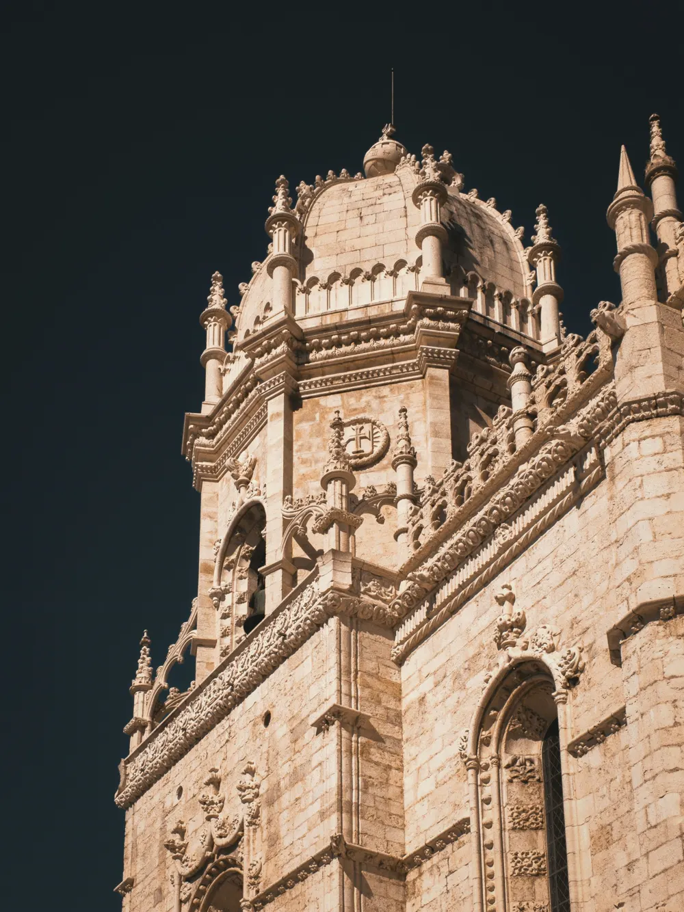
De miradouro en miradouro.
Les miradouros sont les belvédères de Lisbonne : des places en hauteur d'où la ville entière se déplie jusqu'au fleuve. On y vient surtout au coucher du soleil.
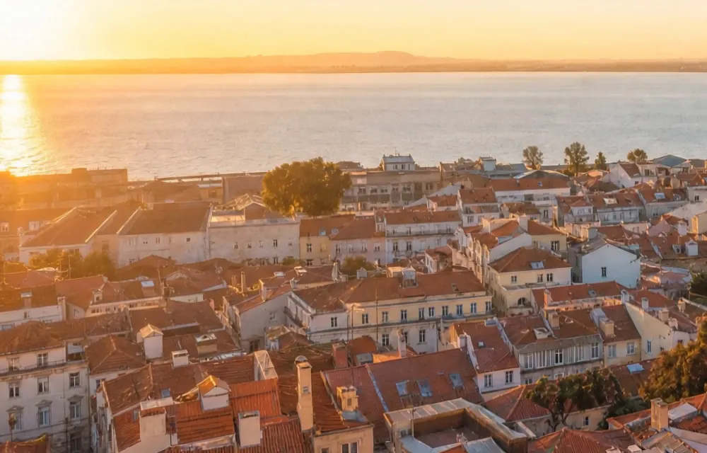
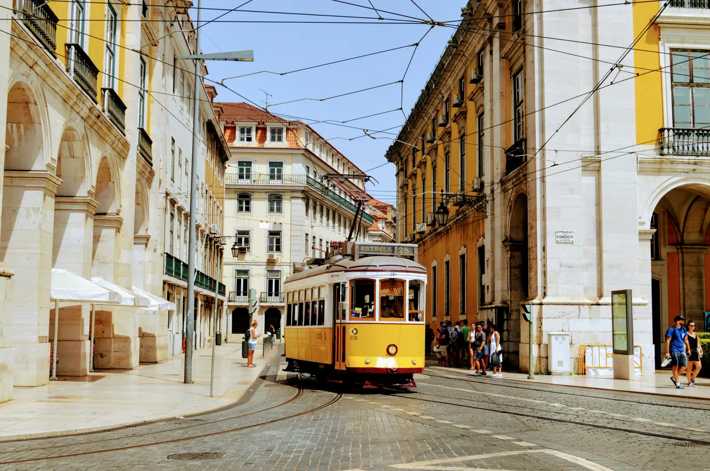
Chapitre 4 · Le Nord et le vin
On remonte vers le nord, à travers les collines.
La vallée du Douro
Le fleuve dessine ses méandres entre les vignes…
41°11′N · 7°33′O · Pinhão
…là où naît le vin de Porto.
Chapitre 4 · Le Douro 41°09′N → 41°11′N
De la ville de Porto, à l'embouchure, jusqu'aux vignobles en amont, la vallée se parcourt en bateau, en train ou en voiture.

Des quais colorés au bord du fleuve, et les rabelos, ces bateaux qui descendaient autrefois les barriques de la vallée.
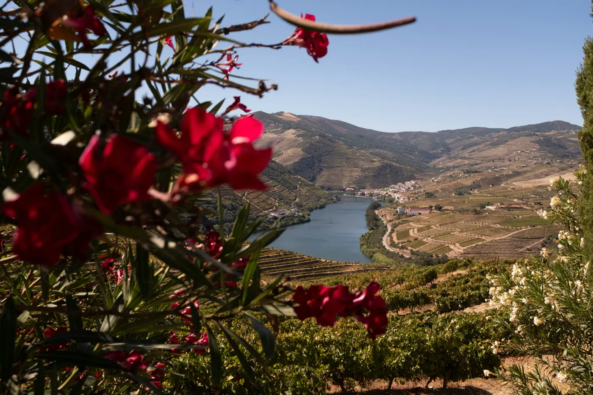
Il traverse l'Espagne puis le nord du Portugal avant de rejoindre l'Atlantique à Porto.
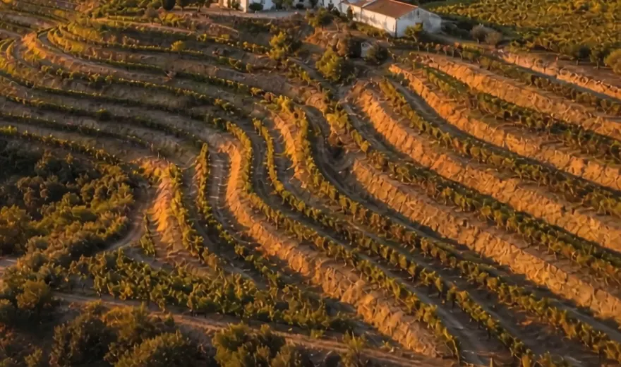
Ces terrasses taillées dans le schiste rendent cultivables des pentes très raides.
Région délimitée
1756
L'une des plus anciennes régions viticoles délimitées au monde.
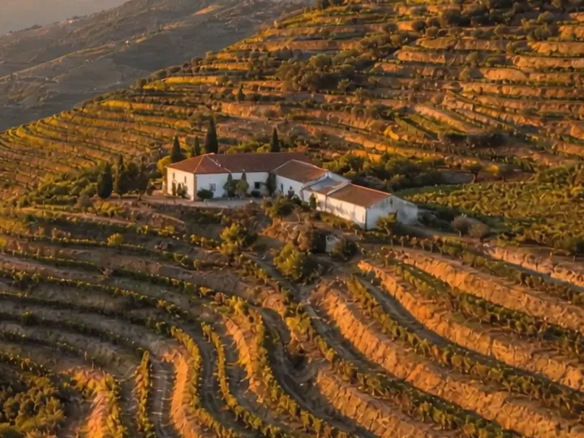
Les domaines viticoles de la vallée, dont plusieurs ouvrent leurs caves aux visiteurs.
Patrimoine mondial
2001
Le Haut-Douro viticole est inscrit au patrimoine mondial de l'UNESCO.
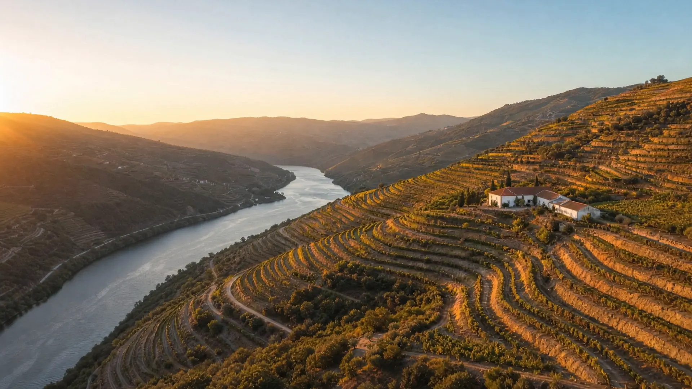
La fin du voyage en images, avant de passer à table.
Chapitre 5 · Les détails
Ces carreaux de céramique peinte couvrent façades, églises et stations de métro. Le bleu cobalt sur fond blanc en est la signature.
Le mot viendrait de l'arabe az-zulayj, « petite pierre polie ».
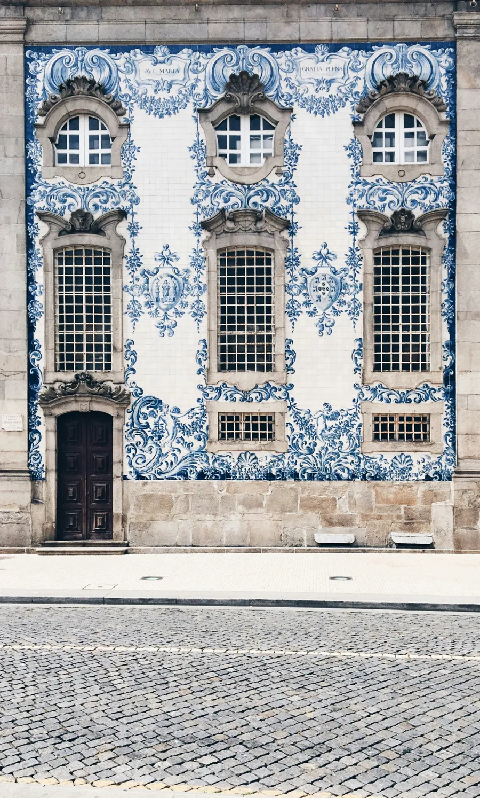
Quatre classiques à goûter en route, du comptoir de Lisbonne aux soirées d'été dans le Minho.
Flan pâtissier en pâte feuilletée
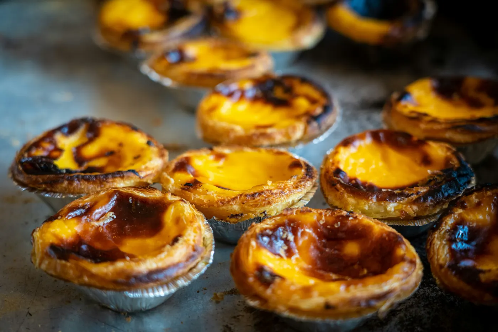
Croûte croustillante, crème caramélisée sur le dessus, saupoudrée de cannelle. Il se mange tiède, au comptoir.
Morue salée
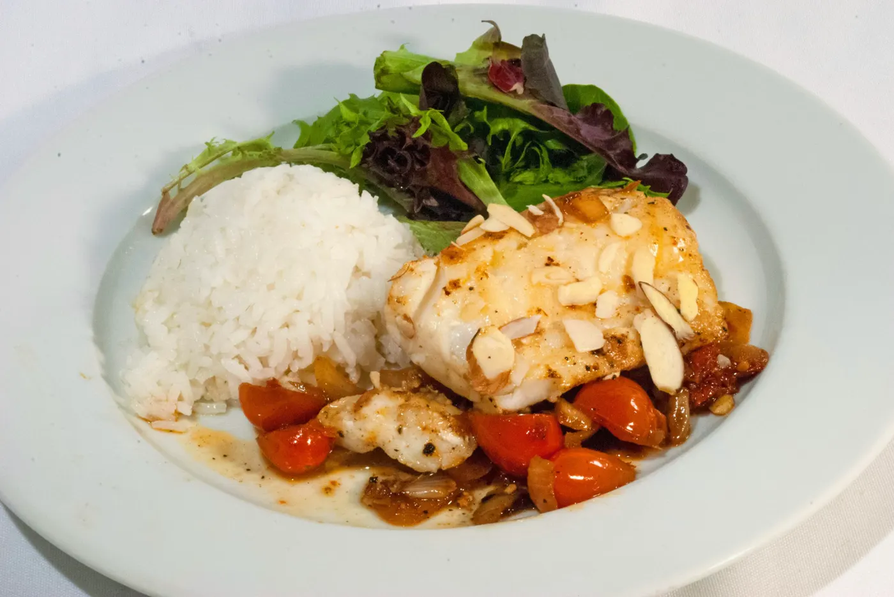
On dit qu'il existe une recette de morue pour chaque jour de l'année : rôtie au four, à Brás avec des œufs, ou en beignets.
Sardines grillées
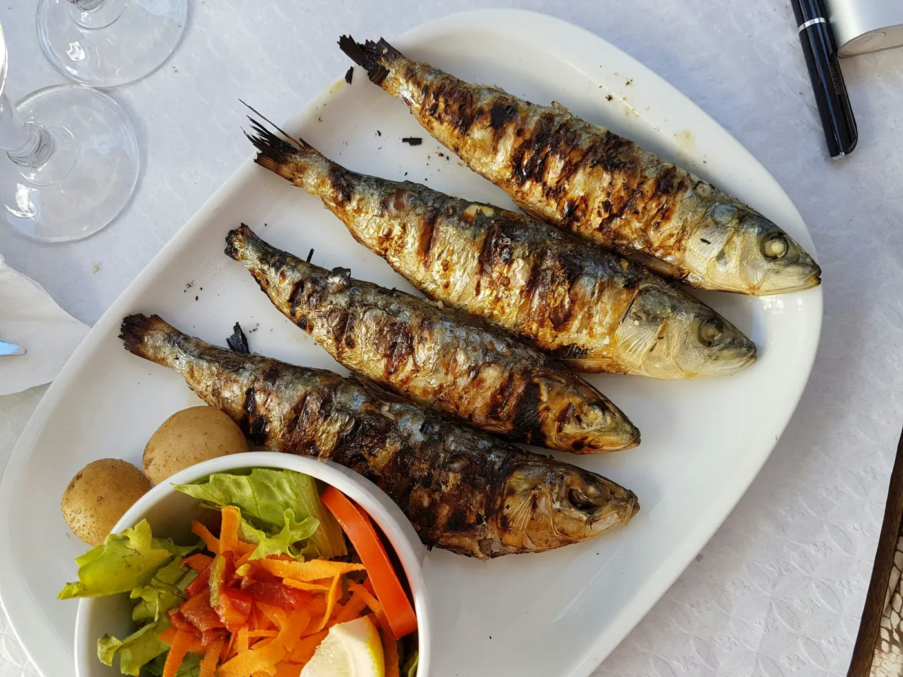
Grillées au charbon, servies avec pommes de terre et salade, ou sur une tranche de pain dans la rue. Elles sont reines des fêtes de juin à Lisbonne.
Vin jeune du Minho
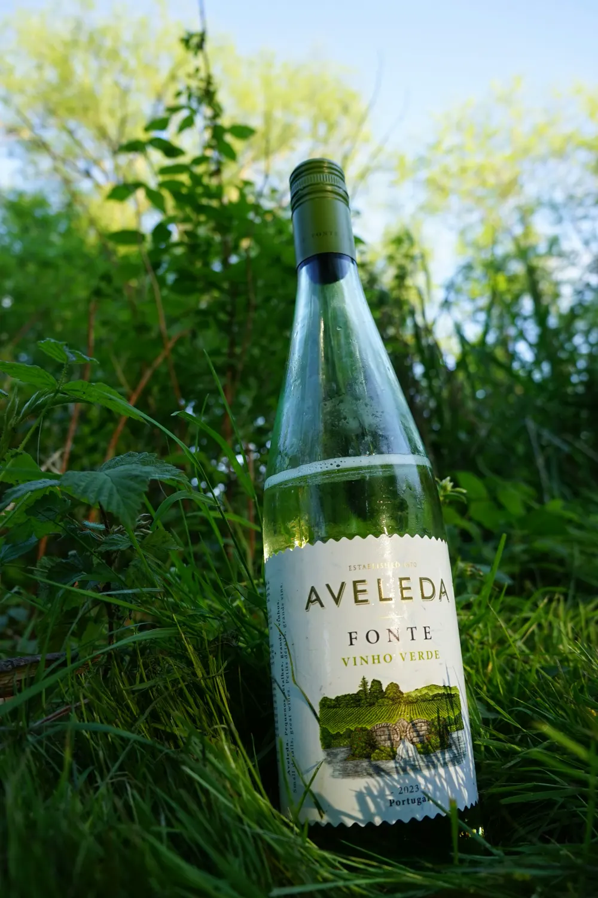
Léger, frais et parfois perlant, il vient de la région verte du nord-ouest. Parfait avec les fruits de mer.
Chapitre 6 · Le trajet
Distances et durées approximatives. Carte stylisée.
Chapitre 6 · Le départ
Choisissez la durée et ce qui vous attire. L'itinéraire se compose sous vos yeux, du sud au nord.